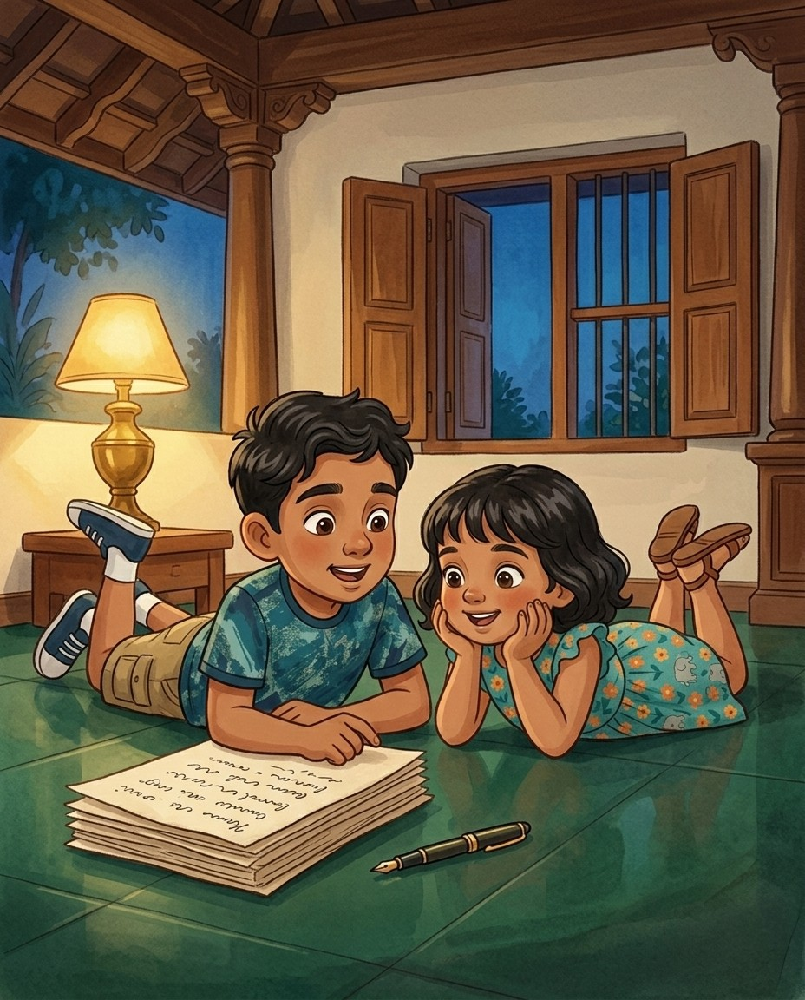

A comic for the grandchildren · Chapter 1
Back to Chiyyaram
Two children, their grandfather's handwritten pages, and a trip to the early 1950s.
This is an adaptation for children, not the memoir itself. The captions are quoted word for word from the chapter. The speech bubbles, the time travel and the pictures (AI-generated illustrations) are imagined. Read the original chapter →
